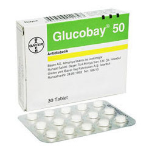

Acarbose

Acarbose ဆိုတာ ဘာလဲ
- ဆီးချိုအမျိုးအစား –၂ ဖြစ်သောသူများတွင် အစားထိ်န်းပြီးလေ့ကျင့်ခန်းပုံမှန်လုပ်၍ Acarbose ဆေးပါ တွဲသောက်ပေးခြင်းဖြင့် ဆီးချိုကို အကောင်းဆုံးထိ်န်းပေးနိုင်မှာ ဖြစ်ပါသည်။
- အစားအစာမှာ ပါဝင်လာသော ကာဗိုဟိုက်ဒရိတ် ချေဖျက်မှုနှင့်စုပ်ယူမှုနှုန်းကို အူလမ်းကြောင်းထဲတွင် လျော့နည်းစေသောကြောင့် အစာစားပြီးတိုင်း သွေးတွင်း အချိုဓာတ်ထိုးတက်ခြင်းမှ ကာကွယ်ပေးနိုင်ပါသည်။
- Acarbose ပါဝင်သောဆေးကို Precose နာမည်နှင့် လူသိများပါသည်။
ဆေးကို ဘယ်နေရာတွေမှာ သုံးလဲ
- ဆီးချိုမတက်အောင် ထိန်းပေးသောကြောင့် ဆီးချိုရောဂါ၏ နောက်ဆက်တွဲဆိုးကျိုးများဖြစ်သည့် ကျောက်ကပ်ရောဂါ၊ မျက်လုံးအမြင်ဆုံးရှုံခြင်း၊ ခြေလက်ထုံနာကျဉ်နာဖြစ်ခြင်းတို့မှ ကာကွယ်ပေး နိုင်ပါသည်။
- နှလုံးရောဂါနှင့် လေဖြတ်ခြင်းတို့ကိုလည်း လျော့ကျစေနိုင်ပ်သည်။
ဆေးဆိုးကျိုးဘာတွေရှိလဲ
- ဆေးစစသောက်ချိန်တွင် ဝမ်းပျက်ဝမ်းလျှောခြင်း၊ ဗိုက်လေပွခြင်း၊ ဗိုက်အောင့်ဗိုက်နာခြင်းတို့ ခံစားရတတ်ပေမယ့် သောက်တာကြာလျှင် သက်သာသွားပါလိမ့်မယ်။
- မသက်သာပဲ ပိုဆိုးလာလျှင်တော့ နီးစပ်ရာဆေးခန်းကို သွားပြဖို့ လိုပါသည်။ ပြင်းထန်ဆိုးကျိုးအနေနှင့် အသည်းထိသောလက္ခဏာများဖြစ်သည့် ပျို့အန်ခြင်း၊ အစားအသောက်ပျက်ခြင်း၊ ဗိုက်နာခြင်း၊ မျက်လုံးနှင့် အသားများဝါခြင်း၊ ဆီးအရောင်ရင့်ခြင်းများ ဖြစ်နိုင်ပါသည်။
- Acarbose ဆေးတစ်မျိုးတည်း ဆိုလျှင် ဆီးချိုအရမ်းမကျနိုင်ပေမယ့် အခြားဆီးချိုဆေးနှင့် တွဲသောက်လျှင်၊ အစာပုံမှန်မစားလျှင်၊ လေ့ကျင့်ခန်းပြင်းပြင်းထန်ထန် လုပ်လျှင် အချိုဓာတ် အလွန်ကျသွားပြီး ချွေးစေးထွက်ခြင်း၊ ရင်တုန်ခြင်း၊ ခြေလက်များတုန်ခြင်း၊ အမြင်ဝါးခြင်း၊ မူးဝေခြင်းများခံစားရနိုင်ပါတယ်။
- ဆေးသောက်နေချိန်တွင် အချိုဓာတ်များသော လက္ခဏာများ ဖြစ်သော ဆီးအလွန်သွားခြင်း၊ ခေါင်းမူးခြင်း၊ အသက်ရှုမြန်ခြင်းနှင့် ရှူထုတ်သော လေထဲတွင် အချိုနံ့တစ်မျိုးရပါက ဆရာဝန်ဆီ အမြန်ဆုံးသွားပြဖို့ လိုအပ်ပါမယ်။
- ရှားရှားပါးပါးအနေနဲ့ ဝမ်းဆက်တိုက်သွားနေလျှင်၊ ဝမ်းထဲသွေးနှင့် ချွဲပါလျှင်စိုးရိမ်ရပါတယ်။
ဆေးသောက်လျှင်ဘာတွေသတိထားရမလဲ
- ဆီးချိုကျ ဆေးများသောက်နေလျှင် ဆရာဝန်နှင့် တိုင်ပင်ရပါမည်။ လိုအပ်လျှင် ဆေးပမာဏကို လျှော့သောက်ရပါမည်။
- အချိုဓာတ် အရမ်းနည်းသော လက္ခဏာပြလျှင် ဂလူးကိုစ့် ဆေးပြား စားပေးပါ။ ပျားရည်တစ်ဇွန်း၊ လိမ္မော်ရည်တစ်ခွက်လည်းသောက်လို့ရပါသည်။
- Acarbose ဆေးသည် သကြားဓာတ်ချေဖျက်နှုန်း နည်းစေသောကြောင့် အိမ်သုံးသကြားစားလျှင် သိပ်အသုံးမဝင်ပါ။
- အူလမ်းကြောင်းပြဿနာရှိလျှင်၊ ကျောက်ကပ်ရောဂါ၊ အသည်းရောဂါရှိလျှင် ဆရာဝန်နှင့်တိုင်ပင်ပါ။
- အရက်လျှော့သောက်ဖို့လိုပါမည်။
- ခွဲစိတ်မှုပြုလုပ်ဖို့ရှိလျှင် မပြုလုပ်ခင်ဆရာဝန်ကို ဆေးသောက်နေရကြောင်း ကြိုပြောပေးပါ။
- ကိုယ်ဝန်ဆောင်သည်များတွင် ဆီးချိုထိန်းရခက်နိုင်သောကြောင့် ကိုယ်ဝန်သေချာအပ်ပြီး ကျွမ်းကျင်ဆရာဝန်နှင့် သေချာတိုင်ပင်ပါ။ ဆေးအာနိသင်ဘယ်လိုရှိလဲ
- အခြားသောက်ဆေးများ၊ တိုင်းရင်းဆေးများ၊ အစာချေဖျက်ဆေးများ(Amylase,Pancreatin)နှင့် တွဲသောက်လျှင် ဆေးအာနိသင် ပြောင်းနိုင်ပါသည်။
- သောက်ဆေးအမျိုးမျိုးသည် ဆီးချိုထိန်းရာတွင် ခက်ခဲနိုင်သောကြောင့် ဆေးမသောက်ခင် ဆရာဝန်နှင့်အရင် တိုင်ပင်သင့်ပါသည်။/li>
- နှလုံးဆေး (Propanolol, Atenolol) ဆေးများသည် အချိုဓာတ်ကျလျှင် ခံစားရသောရင်တုန်ခြင်းကို မသိသာစေသောကြောင့် ဆီးချိုရောဂါသည်များ ဆေးပေါင်းသောက်လျှင် အချိုဓာတ်ကျ၊ မကျအမြဲ စစ်ဆေးနေရပါမည်။
ဆေးသောက်လွန်လျှင်ဘာတွေဖြစ်မလဲ
- အချိုဓာတ်အလွန်ကျကာ မူးဝေခြင်း၊ ချွေးစေးထွက်ခြင်း ၊ရင်တုန်ခြင်း၊ အသက်ရှူကြပ်ခြင်း၊ သတိမေ့ခြင်း ထိဖြစ်နိုင်ပါသည်။
- ဆီးချိုရောဂါသည်များသည် သောက်ဆေးတစ်မျိုးတည်း မလုံလောက်ဘဲ အစာထိန်းခြင်းနှင့် လေ့ကျင့်ခန်းပုံမှန်လုပ်ပေးပြီး ဆီးချိုကို ထိန်းရပါမည်။
- သွေးတွင်း သကြားဓာတ်များခြင်း၊ နည်းခြင်း၏ လက္ခဏာများကိုလည်း လေ့လာထားဖို့လိုပါမယ်။ အမြဲပုံမှန် ဆီးချိုစစ်ပေးပြီး ဆီးချို ကောင်းကောင်းထိန်းနိုင်အောင် ကြိုးစားနေထိုင်ရပါမည်။
Source – ဒေါက်တာ အိမ့်ချယ်ရီ